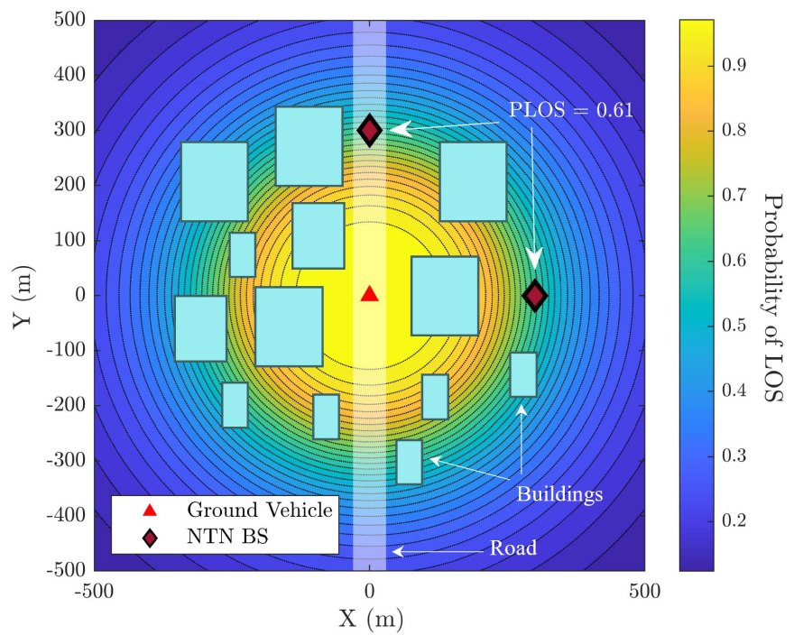
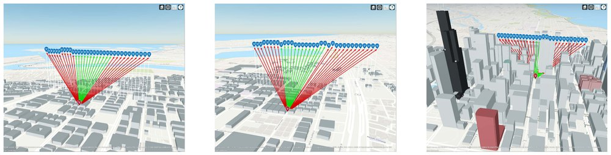
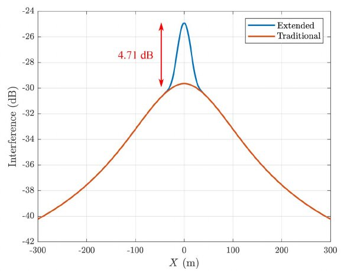

“Their paper … exemplifies the innovative thinking and rigorous research that will drive our industry forward.”
Juan Carlos Salazar, Secretary General of ICAO
The paper
Air taxis and other electric aircraft need a dependable network link for navigation, control, traffic coordination, and monitoring. Terrestrial networks were built mainly for users on the ground, so the paper looks at non-terrestrial options such as tethered and stratospheric platforms.
To analyze how these platforms would perform, the paper introduces a new line-of-sight model that accounts for buildings and for users on the ground. We validated it with ray tracing and tested it against data from cities with different building densities and heights, including Jeddah, Dubai, and Chicago.
The model
The full model is published in IEEE Transactions on Aerospace and Electronic Systems (2025) as Extended Road-Aware Line-of-Sight Probability Model for Urban Air Mobility.
The line-of-sight model most often used for aerial links depends only on the elevation angle between the aircraft and the ground user. It gives a vehicle the same chance of a clear link to an aircraft above the road as to one above buildings at the same distance. In practice the airspace over a street is mostly open, so vehicles on the road are much more likely to have a clear link to an aircraft flying over it.


Our model adds a street term that applies when the aircraft is close to the road and gives way to the usual environment term as the aircraft moves away from it. We fitted its parameters to ray-tracing simulations of urban, dense urban, and high-rise cities, and validated it against 3D building models of Dubai, Jeddah, and Chicago from OpenStreetMap. In suburban areas the street makes no difference, so the usual model is enough there.

The difference matters for interference. For an aircraft 150 m above a road, the usual model underestimates the interference it receives from the vehicles below, by up to 4.71 dB in high-rise areas. The results suggest running air corridors parallel to streets but at a distance from them, and placing non-terrestrial base stations along and above the corridors.

Figures from the journal article, © 2025 IEEE.
The competition
Judging was anonymous: the jury did not see the authors’ names or affiliations. More than 100 abstracts were submitted, on topics ranging from technology and safety to regulation, urban planning, law, and sustainability. Of these, 41 went on to the second round, 21 were invited to submit full papers, and 12 papers reached the final round.
The jury included experts from the National Research Council Canada, SESAR, JAXA, and NASA, and judged the papers on originality, applicability, and technical soundness. The runner-up was a paper from the University of Michigan.
Baha Eddine Youcef Belmekki and I were invited to present the paper at ICAO headquarters, to an audience of government representatives, industry, academics, and international organizations.